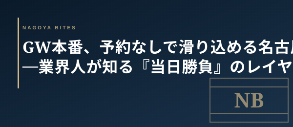

季節・GW本番
GW本番、予約なしで滑り込める名古屋 — 業界人が知る『当日勝負』のレイヤー
GW初日、SNSは「もうどこも入れない」の声で埋まっている。だが業界人は焦らない。名古屋には『予約を受け付けない／受け付ける必要がない』店のレイヤーが、連休中こそ厚く機能するからだ。

この記事はNAGOYA BITES — 名古屋の厳選1,100店超を業界視点で紹介するグルメガイドの一部です。
GW初日、「和食・割烹・鮨は完売」「ホテルも満席」とSNSは諦めムード。だが業界人は焦らない。名古屋には『予約を受け付けない／受け付ける必要がない』店のレイヤーが、連休中こそ厚く機能するからだ。
なぜGWに予約なしで入れる店があるのか
回転前提で設計された業態 — 大衆酒場・町中華・立ち飲み・カウンター鉄板 — は、当日来店こそが最大効率だ。1組30〜60分で出入りする業態にとって、予約管理コストよりも、空席が出たら即座に通すオペの方が機能する。サラリーマン需要が消えるGW中こそ、地元向けに作られた『当日歓迎』の業態がむしろ空いている。
業界人が滑り込む3カテゴリ
① 栄・伏見の大衆酒場・立ち飲み（15:00〜17:00、客単価2,500〜4,000円）
カウンター中心の小箱は予約を取らない店が多い。普段は18時で満席の名店も、GW中の17時台ならカウンター席が空いている。一人飲み・デート前の軽い一杯どちらにも向き、口開け時間帯を狙えば板場の集中度も最も高い。
② 大須・矢場町の町中華・カウンター鉄板（1,000〜2,500円）
家族連れと観光客の動線とズレるエリア。ランチ12時台・夜18時台のピークさえ外せばまず入れる。手羽先・台湾ラーメン・鉄板スパといった名古屋名物に1,500円前後で当たれる。連休中も通常営業の店が多いのが強み。
③ 名駅地下街・新幹線口の老舗（14:00〜17:00、1,500〜3,500円）
観光客の発着動線にあるため、午後の中休み時間帯に空き席が出やすい。1人客に慣れている店が多く、きしめん・味噌煮込み・ひつまぶしを単独でも押さえられる。新幹線待ちの30分〜1時間で名古屋名物を回収するなら、この層が最効率だ。
完売は『別レイヤーへの招待』
業界人にとって予約完売は終わりではなく、業態を切り替える合図だ。和食が無理なら大衆酒場、フレンチが無理なら町中華、鮨が無理ならカウンター鉄板。同じ街に必ず別の質の高さが存在する。完売に怯まず、当日歩いて入る — それがGWの名古屋を最も自由に、最も街らしく楽しむ方法だ。
Inside Perspective — 業界人の目利き
- 回転前提業態（大衆酒場・町中華・カウンター鉄板）は予約管理コストより当日オペの方が機能する。GW中はサラリーマン需要が消えるため『当日歓迎』レイヤーがむしろ空く
- 栄・伏見の小箱は15:00〜17:00の口開けが最も入りやすい。普段18時満席の名店も17時台ならカウンターが空く
- 名駅地下街は観光客の発着動線にあるため、14:00〜17:00の中休みに空き席が集中する。1人客慣れしている店が多く、きしめん・味噌煮込み・ひつまぶしを単独で押さえられる